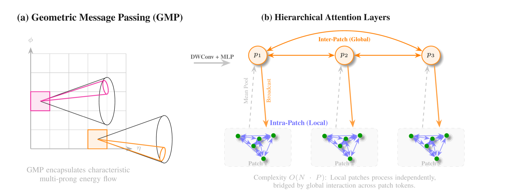
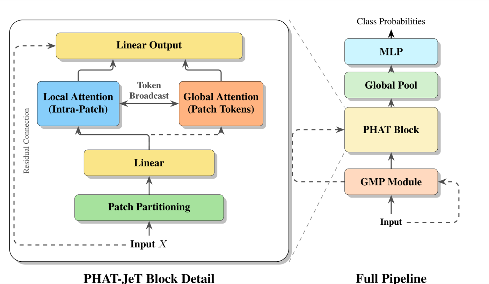
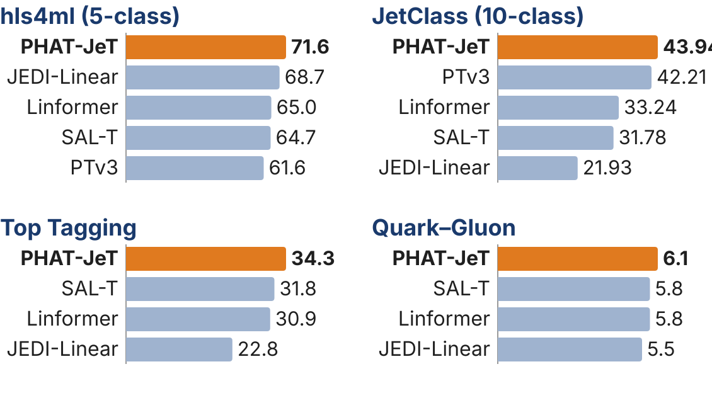

1University of Illinois Chicago · 2UC San Diego ·
3California Institute of Technology · 4Fermi National Accelerator Laboratory
* Equal contribution
Real-time jet tagging is critical for identifying short-lived particle decays in the high-throughput detectors of the Large Hadron Collider, where trigger systems decide which collision events to store under strict latency and accuracy constraints. Transformers achieve the highest jet tagging accuracy when compute is unconstrained, but the quadratic cost of self-attention is too high for the trigger budget. Existing efficient variants reduce this cost but lose classification performance.
We introduce the Patch Hierarchical Attention Transformer (PHAT-JeT), which combines a geometric message-passing (GMP) module that encodes local detector-plane structure with a patch-based attention scheme that computes exact attention within small particle groups and shares global context through patch tokens. At matched FLOPs in floating point, PHAT-JeT achieves the highest accuracy and background rejection among the compared resource-constrained models on four benchmarks (hls4ml, JetClass, Top Tagging, and Quark–Gluon). Hardware-adapted variants of its components meet a 100 ns FPGA latency target.


Restricting exact attention to patches does not cost accuracy: patch attention without GMP already beats a full O(N²) Transformer, 81.51% vs. 81.27%, at roughly half the FLOPs.
| Model | Acc (%) | ROC AUC | Avg bkg rej | Params (K) | FLOPs (M) |
|---|---|---|---|---|---|
| PHAT-JeT | 81.80 ± 0.02 | 0.962 | 71.6 ± 0.6 | 6.7 | 1.31 |
| JEDI-Linear | 81.56 ± 0.05 | 0.961 | 68.7 ± 2.7 | 19.8 | 1.38 |
| Transformer | 81.27 ± 0.06 | 0.959 | 66.9 ± 0.6 | 4.6 | 2.48 |
| SAL-T | 81.28 ± 0.10 | 0.960 | 64.7 ± 0.5 | 5.1 | 1.26 |
| Linformer | 81.22 ± 0.07 | 0.960 | 65.0 ± 1.7 | 11.9 | 1.32 |
| Point Transformer V3 | 80.93 ± 0.10 | 0.958 | 61.6 ± 0.6 | 22.4 | 1.24 |
| PointNet | 75.04 ± 0.06 | 0.934 | 17.0 ± 0.1 | 9.8 | 1.35 |
| HEPT | 74.10 ± 0.02 | 0.929 | 25.7 ± 0.3 | 8.5 | 1.17 |
| ParT (full, unconstrained) | 82.10 ± 0.51 | 0.964 | 72.7 ± 1.0 | 2,127 | 313 |
At 1.31M FLOPs and 6.7K parameters, PHAT-JeT comes within 0.3 points of the full Particle Transformer, which uses about 240× more FLOPs. Its improvement over JEDI-Linear, the strongest prior FPGA-deployable baseline, is statistically significant in both accuracy and background rejection.

| Configuration | Acc (%) | Avg bkg rej | Gain |
|---|---|---|---|
| Local patch attention only | 81.23 ± 0.03 | 64.8 ± 0.7 | |
| + global patch tokens | 81.51 ± 0.11 | 67.0 ± 1.5 | +3.4% |
| + GMP (PHAT-JeT) | 81.80 ± 0.02 | 71.6 ± 0.6 | +6.9% |
FPGA estimates at the Level-1 operating point used by JEDI-Linear: a fully parallel AMD VU13P design at 300 MHz, initiation interval 1, no DSPs or BRAMs, N = 64 particles. LUTs are pre-route da4ml estimates; latency is the critical path.
| Design | Acc (%) | Avg bkg rej | LUTs | Latency (ns) |
|---|---|---|---|---|
| JEDI-Linear, official | 80.94 | 66.0 | 69.9k | 63.3 |
| JEDI-Linear, official PI | 81.81 | 80.4 | 158k | 73.3 |
| JEDI + GMP | 82.08 | 84.8 | 144k | 69.9 |
| JEDI + GMP + patch tokens | 81.93 | 84.0 | 208k | 96.6 |
| Patch attention (ReLU, parallel) + GMP | 81.10 | 66.7 | 708k | 99.9 |
Each PHAT-JeT component has a variant that meets the 100 ns target on its own. These variants replace softmax attention, whose normalization adds latency beyond this target; softmax designs may suit systems with larger latency budgets.
PHAT-JeT needs only a consistent ordering, not a spatial grid or a meaningful sequence. With a 3D voxel GMP grid, the same block reaches 82.29 ± 0.41% overall accuracy on ScanObjectNN PB_T50_RS (real scanned objects) at 0.612M parameters, and 81.22 ± 0.16% at 0.157M. That is above PointNet++ and SimpleView and below PointMLP-elite and PointNeXt-S.
git clone https://github.com/JavierZhao/PHAT-JeT.git@inproceedings{wang2026phatjet,
title = {Patch Hierarchical Attention Transformer for Efficient Particle Jet Tagging},
author = {Wang, Aaron and Zhao, Zihan and Xia, Alan and Sun, Chang and
Gandrakota, Abhijith and Ngadiuba, Jennifer and Cavanaugh, Richard and
Duarte, Javier},
booktitle = {Advances in Neural Information Processing Systems (NeurIPS)},
year = {2026},
eprint = {2605.21789},
archivePrefix = {arXiv},
url = {https://arxiv.org/abs/2605.21789}
}